A SZEFO története
Korszerű fejlesztések, mérföldkövek, együttműködések
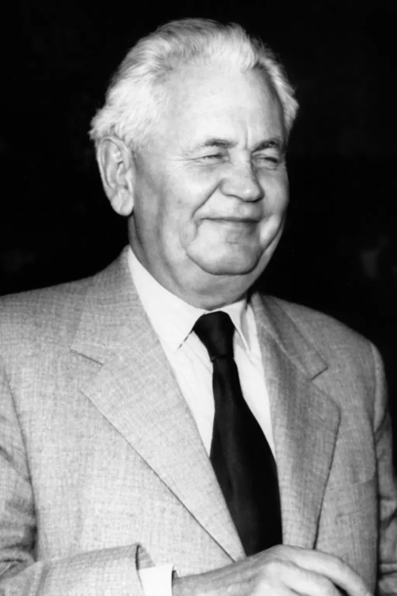
A Szegedi Fonalmentő alapítása
1953. november 2-án dr. Jáksó László, a Magyar Vakok és Gyengénlátók Országos Szövetségének akkori elnöke 26 vak és gyengénlátó sorstársával megalapította a Szegedi Fonalmentő Vállalatot a délmagyarországi látássérült emberek foglalkoztatása céljából. A termelés egy kis pincehelyiségben indult el néhány keresztorsózógéppel és kézi szövőgéppel.
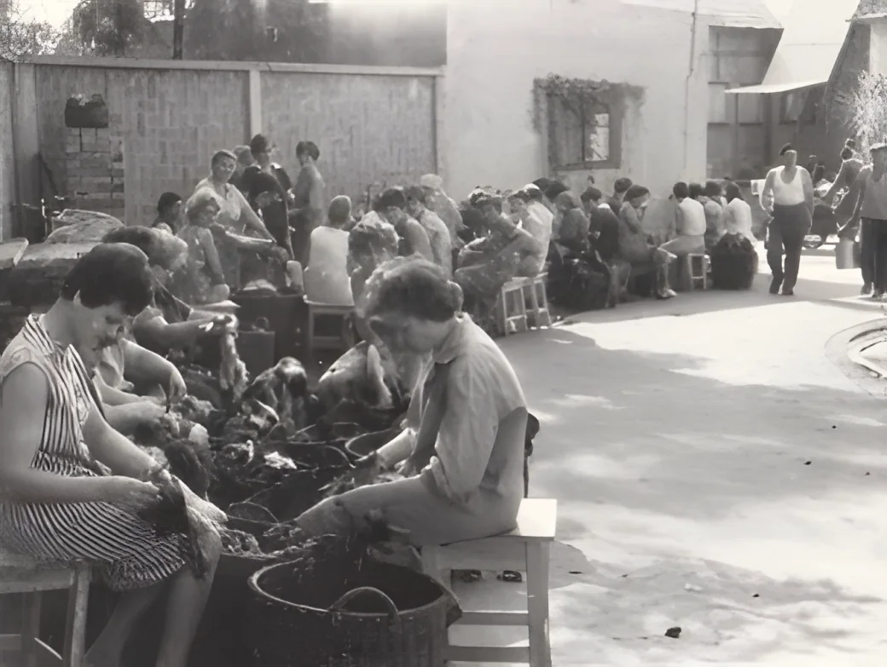
Fonalmentés és orsózás
A Fonalmentőben a könnyűipari vállalatoknál keletkezett textilhulladékot, fonalmaradékot válogatták, átorsózták, majd újrahasznosították. A vállalat saját késztermékeket is gyártott: megalakult kötőrészlege, ahol összesen 4 kézi síkkötőgépen készítettek „mentett” fonalból kötött termékeket.
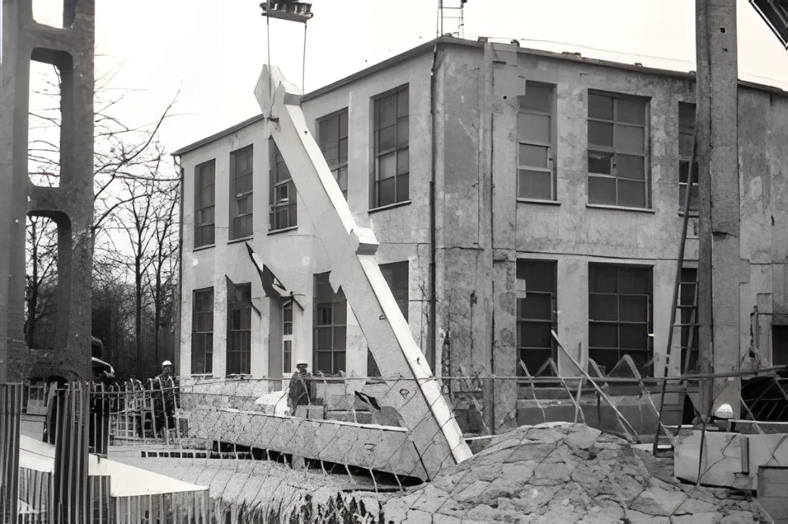
Építkezés
A Szegedi Fonalmentő Vállalat 1955-ben a Tavasz utca 2. szám alatti üresen álló épületbe költözött. Majd 1957-ben elkezdődtek a felújítások és építkezések. A modern, emeletes, légfűtéses gyárépület építési munkálatait 1959-ben fejezték be.
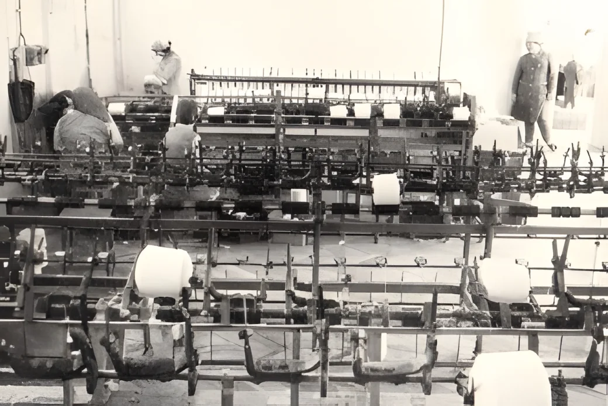
Szegedi Fonalfeldolgozó Vállalat
1959. szeptembertől a Fonalmentő Vállalat hivatalos cégneve Szegedi Fonalfeldolgozó Vállalatra változott. Már 300 munkavállalóval folyt a termelés, a megváltozott munkaképességű dolgozók aránya pedig 80% körüli volt. A vak és látássérült munkavállalókon kívül dolgoztak már mozgáskorlátozott, hallássérült és egészségkárosodott emberek is.
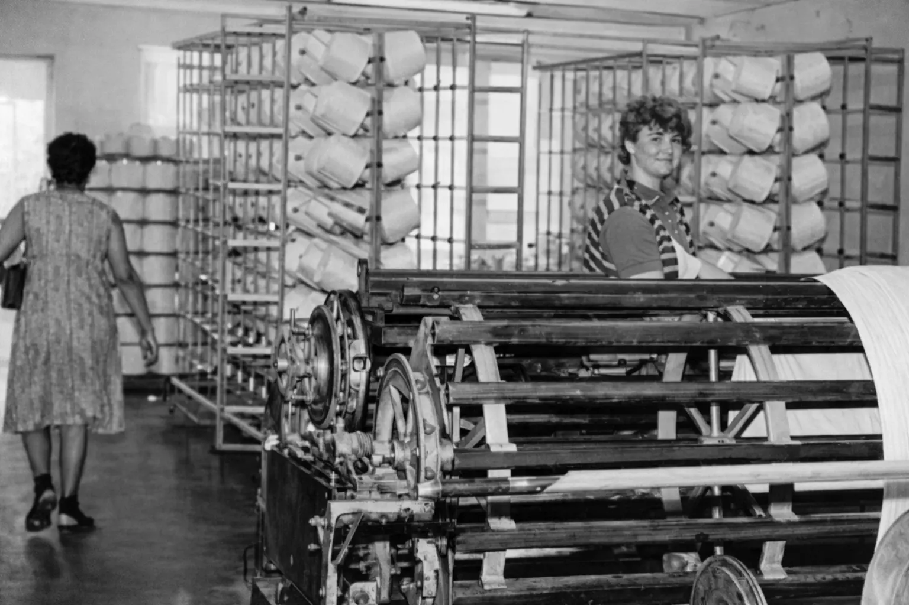
A textilipari tevékenység bővülése
A Szegedi Fonalfeldolgozó Vállalat tevékenysége az 1960-as években fokozatosan bővült a textilipari termékek készítésével. A kötőrészleg mellett létrejött a szövő- és előkészítő műhely, valamint elkezdődött a cérnagombgyártás is.
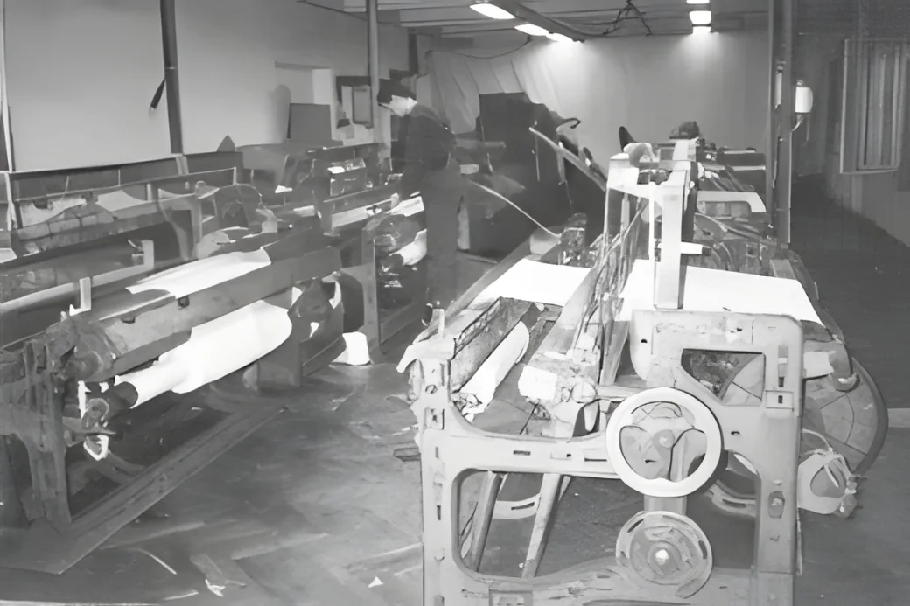
Szentesi telep indulása
Elindult a termelés Szentesen. A szentesi telep szövőrészlegén nagyrészt nyers lepedővásznat, törülközőt és műszálszövetet gyártottak a zömében megváltozott munkaképességű emberek.
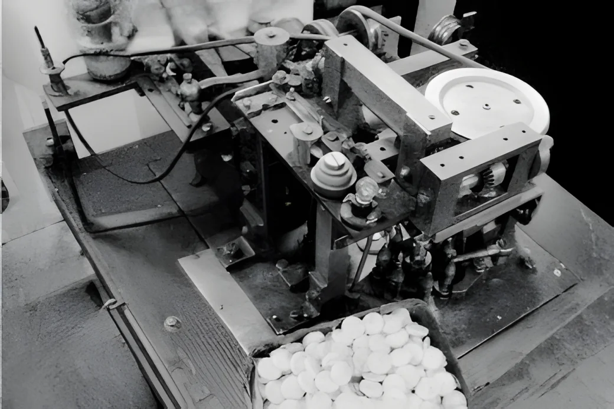
Új telephely kialakítása
A Szegedi Városi Tanácstól megkapta a Szegedi Fonalfeldolgozó Vállalat a Vadász utca 2/b szám alatti épületet, melyben új telephelyet és részlegeket alakítottak ki: a cérnagombgyártó, orsózó és keresztorsózó üzemet és horgolórészleget.
Védőmunkakörök létrehozása
A 70-es évek elejétől egyre több értelmileg akadályozott embernek is lehetősége nyílt dolgozni a vállalatnál. A Szegedi Fonalfeldolgozó Vállalat kezdeményezésére „védőmunkakörök” létrehozásába kezdtek a Szociális Intézetek Központjával (SZIK). Külön gyógypedagógus segítette az értelmileg akadályozott munkavállalók munkavégzését.
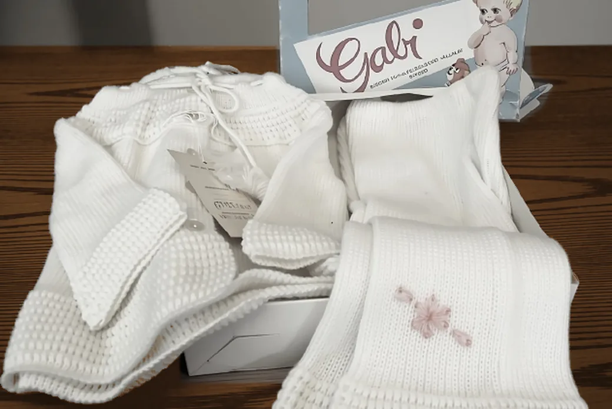
Műszaki modernizálás
Elkezdődött a géppark modernizálása. Az elavult kézi szövő-, kötőgépeket korszerűbb automata gépekre cserélték, így fokozatosan növekedni kezdett a textilipari termelés.
- évente 62 tonna fonalat mentettek és mintegy 400 tonna fonalat orsóztak
- több százezer nm műszaki szövetet, lepedővásznat gyártottak
- több mint 60 000 db felsőruházati terméket kötöttek
- 30 000 db bébiruhát horgoltak kézzel
- cérnagombból pedig több mint 37 millió darabot gyártottak
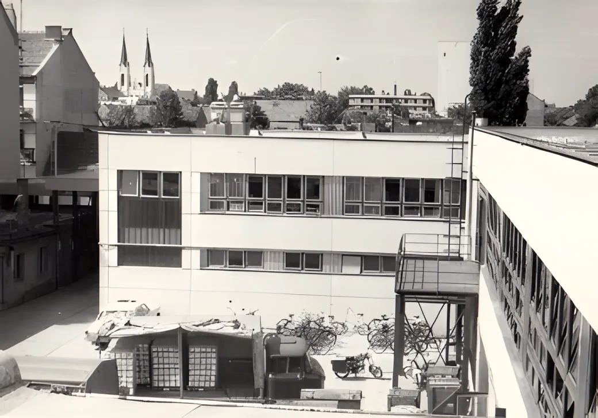
Építkezés a Tavasz utcán
Újabb nagy beruházásnak köszönhetően kibővítették az 1959-ben felépített épületet egy mintegy 1000 nm-es üzemcsarnokkal és épületrészekkel, továbbá egy kb. 1000 nm-es szociális létesítménnyel. Így jött létre a mai, 3 kétszintes épülettömbből álló gyárépület.
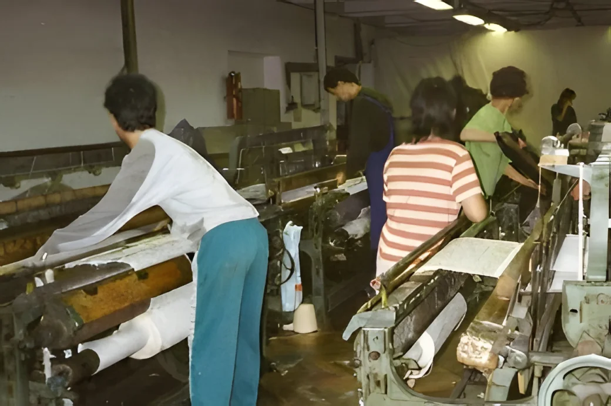
Rehabilitációs foglalkoztatási modell
1989-ben kezdte meg működését a Fonalfeldolgozó rehabilitációs osztálya. Ennek eredményeként a 90-es évek végére olyan rehabilitációs foglalkoztatási modellt sikerült kialakítani és működtetni, amely a „védett foglalkoztatáson” keresztül megfelelő munkalehetőséget biztosított a megváltozott munkaképességű (MMK) emberek számára.
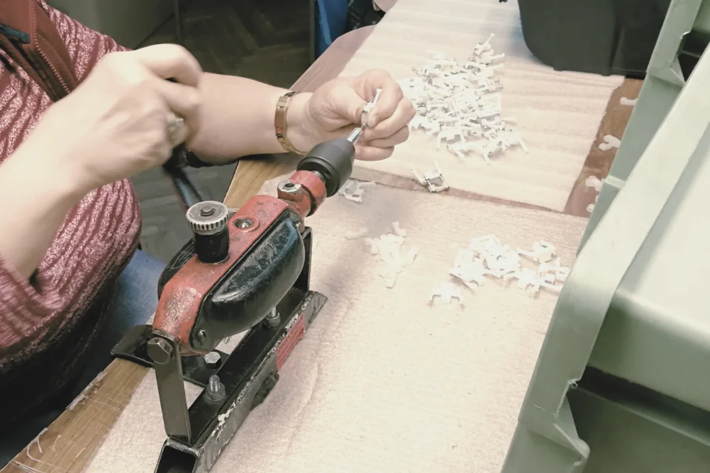
Villamosipari bérgyártás és együttműködés
Hosszú távú és eredményes együttműködés indult a Kontakta Vállalat (ma Legrand Zrt.) és a Szegedi Fonalfeldolgozó Vállalat között. A villamos berendezések összeszerelését kezdetben a szentesi telephelyen végezték MMK-s munkavállalók. A partnerség a SZEFO rehabilitációs foglalkoztatási és ipari bérgyártási tevékenységének fontos pillérévé vált.
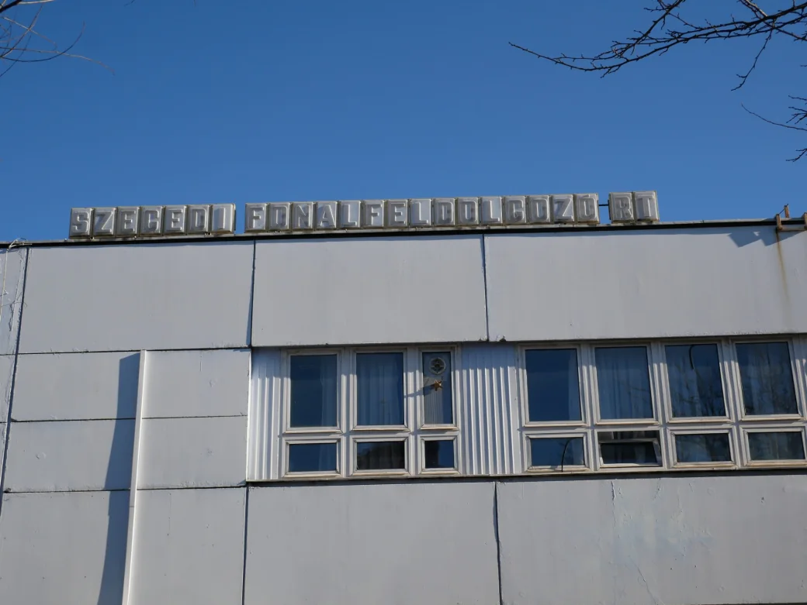
Szegedi Fonalfeldolgozó Rt.
1993-ban Szegedi Fonalfeldolgozó Részvénytársasággá vált és átkerült az önkormányzat tulajdonából az Állami Vagyonügynökség felügyelete alá. A főbb tevékenységek, mint szövés, keresztorsózás, sík- és körkötött kelmék gyártása mellett üvegtechnikai, csomagolóipari és villamosipari termékek gyártása is zajlott már, utóbbiak főként a rehabilitációs foglalkoztatásban.
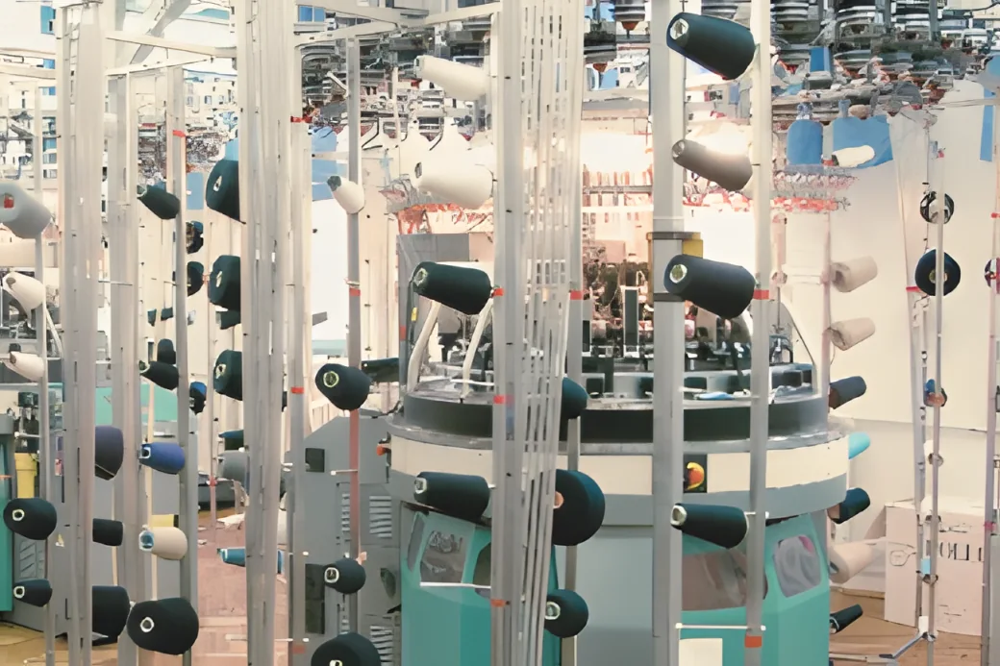
Műszaki fejlesztések, beruházások
A 90-es években országosan válságágazatnak számító könnyűiparban a Fonalfeldolgozó Rt.-nek sikerült talpon maradnia. Az 1998-ban indult nagy beruházásoknak, műszaki fejlesztéseknek köszönhetően modernizálták a teljes gépparkot: korszerű sík- és körkötőgépekkel, vasaló- és varrógépekkel stb. Ez lehetővé tette, hogy versenyképes, a világpiacon is jól értékesíthető, magas minőségű termékeket gyártsanak.
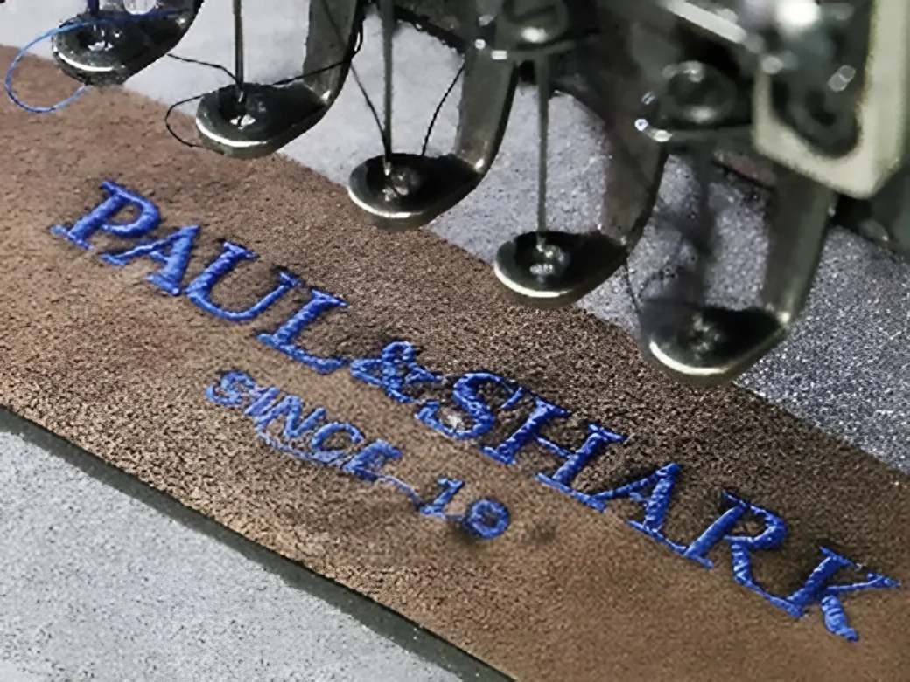
Paul & Shark – egy új nemzetközi kapcsolat
A Szegedi SZEFO Zrt. együttműködésbe kezdett a világszerte ismert Paul & Shark prémium divatmárka tulajdonosával, az olasz DAMA S.p.A. vállalattal. A partnerség fontos mérföldkő: nemzetközi környezetben is erősíti a SZEFO szakmai jelenlétét és gyártási kompetenciáit.
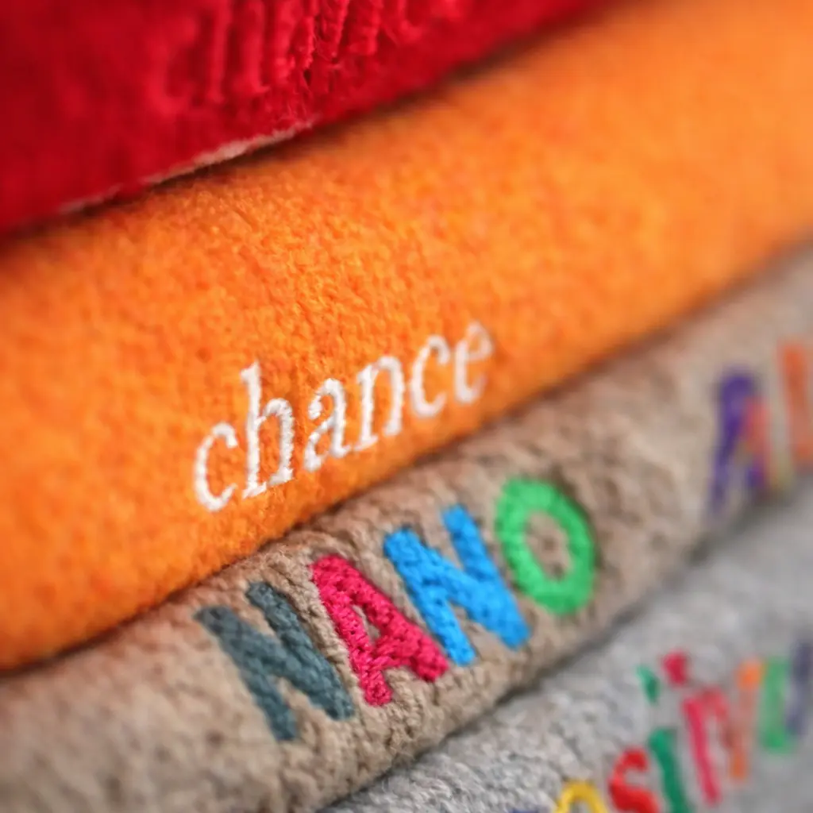
Együttműködés a Szegedi Tudományegyetemmel
A SZEFO kutatás-fejlesztési együttműködést alakított ki a Szegedi Tudományegyetemmel. A közös munka eredménye a saját fejlesztésű, nemzetközi szabadalmi oltalommal védett nanosilver (nanoezüst) technológia, amelyet a vállalat a gyakorlatban is alkalmaz.
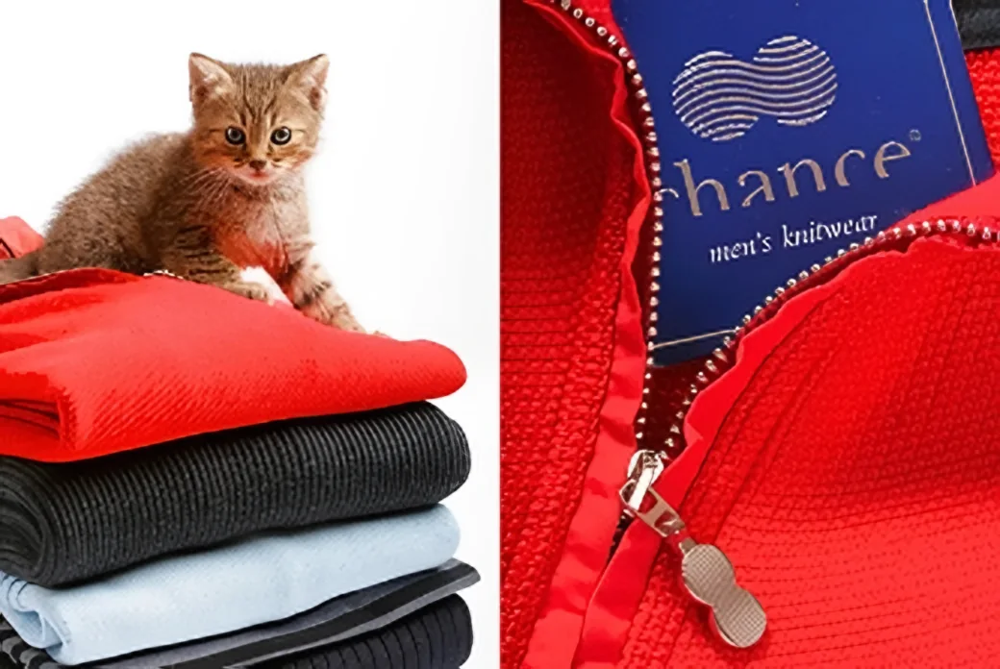
A Chance márka születése
2010-ben megszületett a Chance divatmárka – a „lehetőség” márkája. A termékpaletta saját tervezésű és fejlesztésű kollekciókkal bővült: női, férfi és gyermek sík-kötött termékek készültek prémium minőségben. A márka innovációs értékét tovább erősítette a nanotechnológiára épülő termékfejlesztés, amely modern, korszerű megoldásokat hozott a kollekciókba.
Volánbusz, BKK, BKV – munka- és formaruházat gyártása
A SZEFO új hazai piaci partnerekkel bővítette együttműködéseit: a Volánbusz, valamint a BKK és BKV vállalatokkal. A SZEFO a munka- és formaruházati területen is megerősítette jelenlétét, munkaruhák gyártásával bővítve tevékenységét.
Meghatározó hazai divatmárkákkal közösen
2013-tól termékfejlesztési és gyártói együttműködések indultak a hazai divatipar vezető szereplőivel, divattervezőkkel, prémium divatmárkákkal: ABODI, ÁERON, Katti Zoób, Nanushka, Pápai Lilla, Tomcsányi.
Tulajdonosváltás
A Magyar Állam a Szegedi SZEFO Zrt. feletti 100%-os részesedését a Szeged-Csanádi Egyházmegyének adta át. 2021. december 29-től a társaság egyedüli részvényese és tulajdonosa a Szeged-Csanádi Egyházmegye.
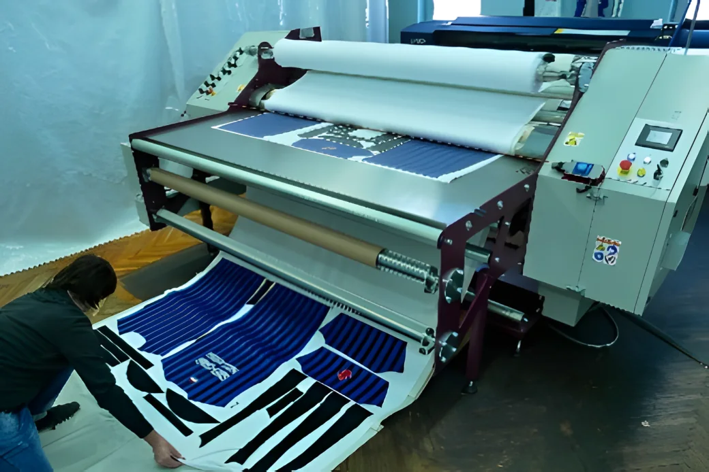
Sportruházat gyártása
Új sportruházati körkötőgépekkel elindult a sportruházat gyártása is. A Szeged-Csanád Grosics Akadémia labdarúgócsapata részére kezdtek el mezeket készíteni a termékfejlesztő munkatársak egy teljesen új gyártási technológiával.
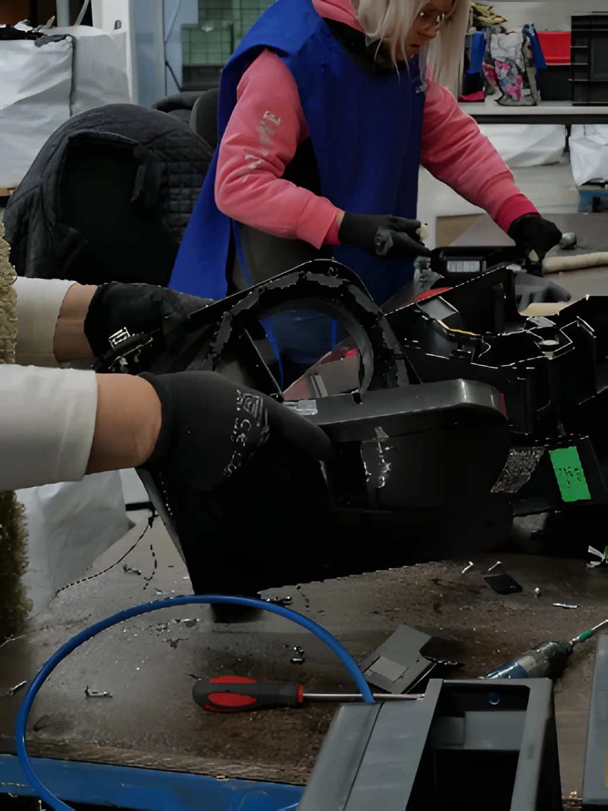
Együttműködés a MOHU MOL Hulladékgazdálkodási Zrt.-vel
A Szegedi SZEFO Zrt. Hódmezővásárhelyi fióktelepén rehabilitációs foglalkoztatás keretében elindult a hulladékgazdálkodási tevékenység is. A megváltozott munkaképességű munkatársak elsősorban elektronikai hulladékok kézi bontását és válogatását, kezelését és e-hulladék újrahasznosításra előkészítését végzik.
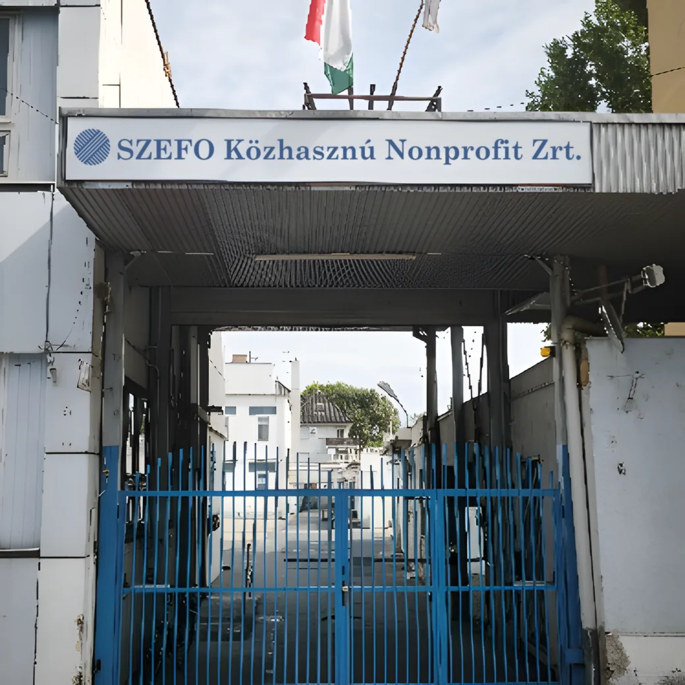
SZEFO Közhasznú Nonprofit Zrt. – Új mérföldkő a SZEFO életében
A SZEFO 2026. áprilistól közhasznú nonprofit szervezetként, SZEFO Közhasznú Nonprofit Zrt. néven folytatja működését. Ez lehetőséget ad arra is, hogy még hatékonyabban tudja támogatni a megváltozott munkaképességű emberek munkaerőpiaci integrációját, és hosszú távon is fenntartható módon valósítsa meg társadalmi küldetését.